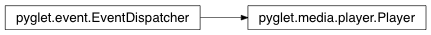

Player Class¶
-
class
Player¶ High-level sound and video player.
Methods:
Attributes:
cone_inner_angleThe interior angle of the inner cone. cone_orientationThe direction of the sound in 3D space. cone_outer_angleThe interior angle of the outer cone. cone_outer_gainThe gain applied outside the cone. event_typesmax_distanceThe distance at which no further attenuation is applied. min_distanceThe distance beyond which the sound volume drops by half, and within which no attenuation is applied. pitchThe pitch shift to apply to the sound. playingRead-only. positionThe position of the sound in 3D space. sourceRead-only. timeRead-only. volumeThe volume level of sound playback.
Attributes¶
-
Player.cone_inner_angle¶ The interior angle of the inner cone.
The angle is given in degrees, and defaults to 360. When the listener is positioned within the volume defined by the inner cone, the sound is played at normal gain (see
volume).
-
Player.cone_orientation¶ The direction of the sound in 3D space.
The direction is specified as a tuple of floats (x, y, z), and has no unit. The default direction is (0, 0, -1). Directional effects are only noticeable if the other cone properties are changed from their default values.
-
Player.cone_outer_angle¶ The interior angle of the outer cone.
The angle is given in degrees, and defaults to 360. When the listener is positioned within the volume defined by the outer cone, but outside the volume defined by the inner cone, the gain applied is a smooth interpolation between
volumeandcone_outer_gain.
-
Player.cone_outer_gain¶ The gain applied outside the cone.
When the listener is positioned outside the volume defined by the outer cone, this gain is applied instead of
volume.
-
Player.event_types= [‘on_eos’, ‘on_player_eos’, ‘on_source_group_eos’]¶
-
Player.max_distance¶ The distance at which no further attenuation is applied.
When the distance from the listener to the player is greater than this value, attenuation is calculated as if the distance were value. By default the maximum distance is infinity.
The unit defaults to meters, but can be modified with the listener properties.
-
Player.min_distance¶ The distance beyond which the sound volume drops by half, and within which no attenuation is applied.
The minimum distance controls how quickly a sound is attenuated as it moves away from the listener. The gain is clamped at the nominal value within the min distance. By default the value is 1.0.
The unit defaults to meters, but can be modified with the listener properties.
-
Player.pitch¶ The pitch shift to apply to the sound.
The nominal pitch is 1.0. A pitch of 2.0 will sound one octave higher, and play twice as fast. A pitch of 0.5 will sound one octave lower, and play twice as slow. A pitch of 0.0 is not permitted.
-
Player.playing¶ Read-only. Determine if the player state is playing.
The playing property is irrespective of whether or not there is actually a source to play. If playing is
Trueand a source is queued, it will begin playing immediately. If playing isFalse, it is implied that the player is paused. There is no other possible state.
-
Player.position¶ The position of the sound in 3D space.
The position is given as a tuple of floats (x, y, z). The unit defaults to meters, but can be modified with the listener properties.
-
Player.source¶ Read-only. The current
Source, orNone.
-
Player.time¶ Read-only. Current playback time of the current source.
The playback time is a float expressed in seconds, with 0.0 being the beginning of the sound. The playback time returned represents the time encoded in the source, and may not reflect actual time passed due to pitch shifting or pausing.
-
Player.volume¶ The volume level of sound playback.
The nominal level is 1.0, and 0.0 is silence.
The volume level is affected by the distance from the listener (if positioned).
Inherited members¶
Methods
Player.register_event_type(name)Register an event type with the dispatcher.
Registering event types allows the dispatcher to validate event handler names as they are attached, and to search attached objects for suitable handlers.
Parameters: name (str) – Name of the event to register.